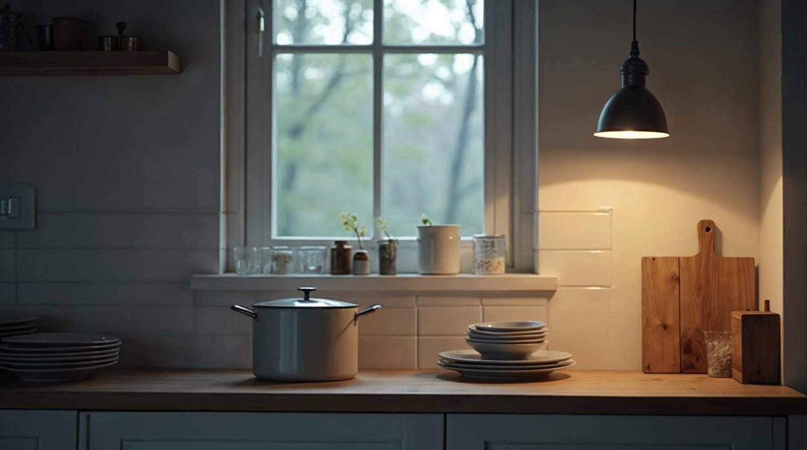
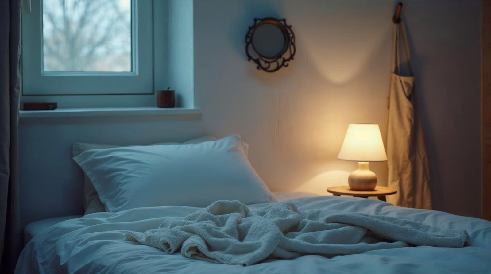
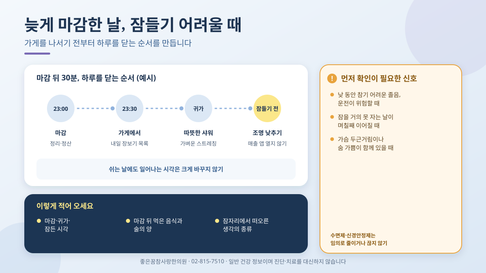

이종호 한의사 감수좋은꿈참사랑한의원 대표원장 (한의사 면허번호 19769)발행 2026-11-23 · 수정 2026-11-27
이 글의 차례
- 왜 이런 불편이 생길 수 있나요
- 몸은 녹초인데 왜 잠은 오지 않을까요?
- 잠이 늦어지는 이유, 어떻게 나눠 볼까요?
- 먼저 이렇게 여쭙니다
- 일상에서 먼저 해 볼 수 있는 것
- 하루 종일 서 있던 다리와 허리, 잠들기 전에 풀어 주기
- 술 한 잔으로 잠을 부르면 어떻게 되나요?
- 마감 뒤 식사, 무엇을 얼마나 먹을까요?
- 상황별 예시
- 가게에서 집까지 오는 길도 쉬는 시간이 될 수 있을까요?
- 쉬는 날은 어떻게 보내면 좋을까요?
- 스스로 점검해 보세요
- 한의원에서 함께 살필 수 있는 경우
- 첫 방문은 이렇게 진행됩니다
- 얼마나 지켜보고 언제 상담할까요
- 이렇게 기록해 오시면 상담이 쉬워집니다
- 이런 증상은 먼저 확인이 필요합니다
- 관련 글
가게 불을 끄고, 정리와 정산까지 마치고 나면 자정이 훌쩍 넘어 있어요. 몸은 하루 종일 서서 움직여 천근만근인데, 막상 누우면 오늘 매출과 내일 장보기, 직원 일정이 머릿속에서 줄줄이 이어지죠. 식당을 하시는 분들께 이런 밤이 낯설지 않다는 얘기를 진료실에서 자주 들어요.
먼저 이건 말씀드릴게요. 누워서도 가게 생각이 나는 건 이상한 게 아니에요. 그 정도 걱정과 꼼꼼함이 있으니까 가게가 굴러가는 거거든요. 예민함도 그동안 가게를 지켜 온 힘인 거죠. 다만 그 힘이 잠자리까지 따라 들어오니 몸이 쉴 틈이 없는 거예요.
마감 시간은 몸을 쓰는 일과 머리를 쓰는 일이 한꺼번에 끝나는 때예요. 그런데 둘이 꺼지는 속도는 서로 달라요. 몸은 일을 마쳤는데 머리는 아직 퇴근을 못 한 거죠. 몸은 무겁고, 머리는 매출 숫자와 재료 주문을 계산하느라 아직 바쁘고요.
그러니 귀가 뒤 바로 눕기보다, 머리를 먼저 내려놓고 몸을 데운 뒤 눕는 순서를 만들어 두시길 권해요. 마감 뒤 귀가까지의 흐름을 하루를 닫는 순서로 바꾸는 거죠. 그러면 잠자리에 드는 시각을 조금씩 일정하게 맞춰 볼 수 있어요.
가게를 하는 분 가운데에는 쉬는 날이 드물고, 아파도 문을 닫기 어려운 분이 많아요. 그래서 잠이 늦어지는 것쯤은 견딜 일로 여기기도 하시죠. 그런데 잠이 계속 모자라면 낮의 판단과 손님 응대, 몸의 회복까지 함께 무거워지기 쉬워서, 마감 뒤 한두 시간을 다시 설계해 볼 만해요.
왜 이런 불편이 생길 수 있나요
- 마감 직전까지 바쁘게 움직이면 몸이 긴장한 상태로 귀가해 바로 잠들기 어려운 경우가 있습니다.
- 늦은 시간의 정산이나 휴대전화 확인은 머리를 다시 깨우는 계기가 될 수 있습니다.
- 마감 뒤 늦은 식사나 술 한 잔은 잠의 후반을 얕게 만들기도 합니다.
- 하루 종일 서서 일하면 다리가 붓고 허리가 뻐근해, 누웠을 때 자세를 자주 바꾸며 잠들기가 늦어지기도 합니다.
- 늦은 밤 찬 공기를 맞으며 귀가해 몸이 식은 채로 바로 누우면 잠이 얕다는 분도 있습니다.
- 쉬는 날이 적으면 피로가 쌓여 오히려 잠이 얕아지는 경우가 있습니다.
몸은 녹초인데 왜 잠은 오지 않을까요?
마감 직전 한두 시간은 하루 중 가장 바쁜 때인 경우가 많습니다. 마지막 손님을 받고, 주방을 정리하고, 정산을 맞추는 동안 쌓인 긴장은 가게 문을 잠근다고 바로 풀리지 않습니다. 여기에 늦은 식사와 술, 휴대전화 속 매출 숫자가 더해지면 머리는 다시 깨어나기 쉽습니다.
한의학에서는 오래 서서 일하며 기운을 많이 쓴 몸에 걱정과 긴장이 겹치면, 마음이 편히 내려앉지 못해 잠이 늦어진다고 보기도 합니다.
저는 잘 먹고, 잘 싸고, 잘 자고, 마음 편하고, 몸 따뜻하게, 이 다섯 가지를 몸이 회복하는 바탕으로 봅니다. 늦은 마감 뒤의 밤은 그 가운데 끼니와 잠, 마음과 몸의 온기가 한꺼번에 흔들리기 쉬운 시간입니다.
잠이 늦어지는 이유, 어떻게 나눠 볼까요?
- 누우면 매출과 재료, 직원 생각이 이어진다면, 정산과 다음 날 준비를 어디서 마치는지를 먼저 살핍니다.
- 누워도 다리가 저리고 허리가 뻐근해 자세를 자꾸 바꾼다면, 서서 일한 몸을 풀어 주는 시간이 있는지를 봅니다.
- 잠은 드는데 새벽에 자주 깨고 목이 마르다면, 늦은 식사와 술의 양과 시각을 함께 봅니다.
- 쉬는 날에만 잠이 편하다면, 일하는 날의 마감 뒤 흐름부터 먼저 살펴봅니다.
먼저 이렇게 여쭙니다
- 마감 후 집에 도착하는 시각은 보통 몇 시인가요?
- 귀가 뒤 잠들기까지 얼마나 걸리나요?
- 잠자리에서 일 생각이 자주 이어지나요?
- 마감 뒤 식사나 술은 몇 시쯤 드시나요?
- 다음 날 아침 몇 시에 일어나야 하나요?
- 하루에 몇 시간 정도 서서 일하시나요?
- 귀가 뒤 휴대전화로 매출이나 리뷰를 확인하시나요?
- 한 달에 온전히 쉬는 날은 며칠인가요?

일상에서 먼저 해 볼 수 있는 것
- 정산과 다음 날 준비 목록은 가게에서 마치고 나오기
- 귀가 후 따뜻한 샤워와 가벼운 스트레칭으로 하루를 마무리하는 순서 만들기
- 잠들기 전 휴대전화로 매출을 확인하는 습관 줄이기
- 마감 뒤 식사는 양을 줄이고 술은 마시는 날을 정해 두기
- 쉬는 날에도 일어나는 시각을 크게 바꾸지 않기
예를 들어 밤 11시에 마감한다면 11시 반까지 정산을 끝내고 가게에서 내일 장보기 목록을 적어 둡니다. 집에 와서는 샤워, 가벼운 스트레칭, 조명 낮추기 순서로 30분을 보내고 그동안 매출 앱은 열지 않습니다.
하루 종일 서 있던 다리와 허리, 잠들기 전에 풀어 주기
열 시간 넘게 서서 일한 날에는 종아리가 단단해지고 발이 붓고, 허리가 묵직하게 뻐근하기도 합니다. 이 상태로 바로 누우면 몸이 편한 자세를 찾지 못해 뒤척이다 잠이 늦어지기 쉽습니다.
- 집에 와서 따뜻한 물로 종아리와 발을 충분히 데웁니다.
- 벽에 엉덩이를 붙이고 누워 다리를 벽에 기대어 5분쯤 올려 둡니다.
- 바닥에 앉아 다리를 펴고 상체를 천천히 숙여 종아리와 허벅지 뒤를 늘립니다.
- 누워서 무릎을 가슴 쪽으로 당겨 안고 허리를 둥글게 풀어 줍니다.
- 발목을 천천히 위아래로 젖히며 종아리를 부드럽게 움직여 줍니다.
동작은 아프지 않은 범위에서 천천히, 숨을 내쉬며 합니다. 이 시간 자체가 '오늘 영업은 끝났다'는 신호가 되어 머리를 식히는 데도 도움이 될 수 있습니다.
가게에서 일할 때도 쿠션이 있는 신발을 신고, 한자리에 오래 서 있을 때는 한쪽 발을 낮은 받침에 번갈아 올려 두는 방법이 있습니다. 손님이 적은 틈에 잠깐 앉아 발목을 돌려 주는 것도 좋습니다.
술 한 잔으로 잠을 부르면 어떻게 되나요?
마감 뒤 술 한두 잔은 하루의 긴장을 푸는 의식처럼 느껴지기 쉽습니다. 처음에는 졸음이 빨리 오는 것 같지만, 술이 깨는 새벽 무렵 잠이 얕아지고 자주 깨며 목이 마르다는 분이 많습니다.
술에 기대는 날이 늘면 같은 양으로는 잠이 오지 않아 점점 양이 늘기도 합니다. 술 대신 따뜻한 차 한 잔이나 따뜻한 물로 씻는 시간을 하루를 닫는 의식으로 바꿔 보세요. 한 번에 끊기 어렵다면 마시는 날부터 줄여 가는 것이 현실적입니다.
마감 뒤 식사, 무엇을 얼마나 먹을까요?
하루 종일 제대로 먹지 못하다 마감 뒤에 첫 끼를 푸짐하게 먹는 분이 많습니다. 늦은 시간의 많은 식사는 잠자리까지 속을 무겁게 하고, 다음 날 아침 입맛을 떨어뜨려 다시 끼니를 거르는 흐름을 만들기 쉽습니다.
마감 전 손님이 적은 시간에 짧게라도 한 끼를 먹어 두면, 마감 뒤 허기가 덜할 수 있습니다. 마감 뒤에는 밥과 국, 두부나 달걀 같은 부드러운 반찬으로 양을 줄여 먹고, 먹은 뒤 씻고 몸을 푸는 시간을 두어 바로 눕지 않도록 해 보세요. 기름진 안주와 야식은 횟수부터 줄여 봅니다.
상황별 예시
- 예를 들어 마감 뒤 직원들과 늦은 식사를 하며 술을 곁들이는 날이 일주일에 네댓 번인 경우, 술은 마시는 요일을 정해 횟수부터 줄이고, 식사는 밥과 국 위주로 가볍게 먹은 뒤 바로 눕지 않는 것을 목표로 해 봅니다.
- 예를 들어 새벽 장보기 때문에 잠이 4~5시간밖에 안 되는 경우, 잠 시간을 억지로 늘리려 하기보다 장보기 뒤 오후 이른 시간에 20~30분 짧게 쉬고, 마감 뒤 잠들기까지 걸리는 시간을 줄이는 쪽으로 계획을 세웁니다.
- 예를 들어 잠자리에서 매출 앱을 보다가 숫자가 신경 쓰여 한 시간 넘게 뒤척이는 경우, 매출 확인은 다음 날 아침 정해 둔 시각에 한 번만 하기로 하고, 휴대전화는 침실 밖에서 충전해 봅니다.
가게에서 집까지 오는 길도 쉬는 시간이 될 수 있을까요?
가게 문을 잠그고 집에 오는 길은 짧게는 10분, 길게는 30분이 넘기도 합니다. 이 시간에 거래처와 통화를 하거나 신호를 기다리며 매출 앱을 열면, 머리는 가게에 남은 채로 현관문을 열게 됩니다.
걸어서 오는 분이라면 일부러 조금 천천히 걸으며 바깥 공기와 발걸음에 마음을 두어 보세요. 차로 오는 분이라면 운전 중에는 휴대전화를 멀리 두고, 라디오 음량을 낮추거나 조용한 음악으로 바꾸는 것만으로도 머리의 속도가 한 단계 내려가는 느낌을 받는 분이 많습니다.
집 앞에 도착하면 바로 들어가기 전에 숨을 길게 몇 번 내쉬고, 오늘 장사에 대한 생각은 여기까지라고 스스로 정리해 보세요. 이렇게 오가는 길을 가게와 집 사이의 경계로 쓰면, 귀가 뒤 닫는 순서도 한결 수월하게 이어집니다.
가게에서 집이 아주 가깝다면 일부러 한 블록쯤 돌아서 걷는 것도 방법입니다. 몇 분 안 되는 길이라도 바깥바람을 쐬는 시간이 생기면, 가게의 열기와 소음에서 몸이 먼저 빠져나오는 느낌을 받을 수 있습니다.
쉬는 날은 어떻게 보내면 좋을까요?
어렵게 낸 쉬는 날을 한낮까지 몰아 자며 보내면, 그날 밤 잠이 늦어지고 다음 영업일 아침이 더 힘들어지기 쉽습니다. 쉬는 날의 잠은 피로를 푸는 기회이기도 하지만, 리듬을 지키는 날이기도 합니다.
쉬는 날에도 일어나는 시각은 평소와 한 시간 안쪽으로 두고, 오전에 햇빛을 보며 걷는 시간을 가져 보세요. 모자란 잠은 이른 오후에 짧게 쉬며 채우고, 저녁은 평소보다 이른 시각에 먹어 몸이 '오늘은 쉬는 날'을 느끼게 해 주세요.
가게 일은 쉬는 날만큼은 정해 둔 시각에 한 번만 확인하고, 나머지 시간에는 알림을 꺼 두는 연습을 해 보세요. 쉬는 날 저녁에도 일하는 날과 같은 '닫는 순서'를 지키면, 다음 날 마감 뒤에도 그 순서를 이어 가기가 한결 쉽습니다.
스스로 점검해 보세요
- 귀가 뒤 잠들기까지 한 시간 넘게 걸리는 날이 일주일에 사흘 이상이다.
- 잠자리에서 매출이나 재료 주문, 직원 문제 생각이 자주 이어진다.
- 마감 뒤 식사가 잠들기 직전이고 양이 많은 편이다.
- 잠을 부르려고 술을 마시는 날이 예전보다 늘었다.
- 다리가 붓거나 허리가 뻐근해 누웠을 때 자세를 자주 바꾼다.
- 한 달에 온전히 쉬는 날이 이틀이 채 안 된다.
- 쉬는 날에는 한낮까지 몰아 자고, 그날 밤 잠이 더 늦어진다.
한의원에서 함께 살필 수 있는 경우
- 마감 뒤 긴장이 풀리지 않아 잠이 늦어지는 경우 생활 리듬과 긴장 정도를 함께 살핍니다.
- 늦은 식사와 음주로 잠이 얕은 경우 저녁 식사와 소화를 함께 살핍니다.
- 쉬는 날이 없어 피로가 쌓이는 경우 하루의 쉼과 몸의 상태를 함께 살핍니다.

첫 방문은 이렇게 진행됩니다
- 맥 짚기와 이야기 듣기: 모든 분의 맥을 먼저 짚어 지친 정도와 긴장을 살피고, 맥을 보면서 영업시간과 마감 시각, 귀가 뒤 하는 일, 잠드는 모습, 쉬는 날의 생활을 충분히 여쭙습니다.
- 혀·배 살피기: 늦은 식사와 술로 속이 불편하다면 필요하다고 판단될 때 설진·복진을 더해 봅니다.
- 생활 기록 함께 보기: 마감 시각과 귀가 시각, 잠든 시각을 나란히 놓고, 잠이 늦어지는 날의 공통점(늦은 정산, 술, 손님이 많았던 날 등)을 함께 찾습니다.
- 방향 정하기: 상태에 맞춰 침이나 한약 상담 등을 정하고, 오래 서서 일해 다리와 허리가 불편하면 그 부분도 함께 살핍니다.
- 귀가 전 정리: 가게 일정에 맞춰 지킬 수 있는 저녁 순서를 함께 정합니다.
얼마나 지켜보고 언제 상담할까요
- 정산을 가게에서 끝내고 귀가 뒤 30분 닫는 순서를 지키는 것을 2~3주 이어 가며 귀가 시각과 잠든 시각을 적어 봅니다.
- 그래도 잠들기까지 한 시간 넘게 걸리는 날이 일주일에 사흘 이상이고 한 달 넘게 이어진다면 상담을 받아 보세요.
- 마감 뒤 순서를 지켜도 다리 저림이나 허리 뻐근함 때문에 자주 깬다면, 그 불편도 함께 살펴볼 때입니다.
- 술 없이는 잠들기 어렵다고 느끼거나 마시는 양이 점점 늘었다면 기다리지 말고 상담을 받아 보시길 권합니다.

이렇게 기록해 오시면 상담이 쉬워집니다
- 마감 시각, 귀가 시각, 잠든 시각
- 마감 뒤 먹은 음식과 술의 양
- 잠자리에서 떠오른 생각의 종류(매출, 직원, 장보기 등)
- 쉬는 날과 일하는 날의 잠 차이
- 손님이 많았던 날, 직원 문제나 재료 문제가 있었던 날
기록은 다음 날 아침 출근 준비를 하며 한 줄로 남기면 충분해요. 매출이 좋았던 날과 아쉬웠던 날을 함께 표시해 두면, 걱정이 잠에 미치는 영향을 스스로도 알아차리기 쉬워지거든요.
부탁은 딱 하나만 드릴게요. 정산과 내일 준비 메모는 가게에서 끝내고, 집에는 들고 들어가지 마세요. 가게 문을 닫으면서 머릿속 장부도 같이 닫는 거예요. 귀가 뒤 뭘 드시고 어떻게 쉬실지는 하시던 대로 두셔도 괜찮아요.
처음 며칠은 누워서 다시 휴대전화로 매출을 확인하고 싶어지실 거예요. 그것도 원래 그래요. 그래도 그런 날이 줄어들수록 잠자리에 드는 시각이 조금씩 앞당겨지는 걸 느끼시는 분들이 많아요.
문을 닫는 순간까지 손님과 가게를 먼저 챙겨 온 하루였을 거예요. 하룻밤에 다 바뀌지 않아도 괜찮아요. 다시 오시면 지난 한 주, 귀가 뒤 잠들기까지의 시간이 어땠는지 같이 살펴봐요. 마감 뒤 고민이 있으시면 그때 다 꺼내 놓으셔도 좋아요.
이런 증상은 먼저 확인이 필요합니다
- 낮 동안 참기 어려운 졸음으로 운전이 위험하거나, 한쪽 다리만 갑자기 붓고 아픈 경우
- 스스로를 해칠 생각이 들면 ☎ 109로 바로 연락하세요.
이런 신호가 있으면 한의원보다 가까운 병원이나 응급실을 먼저 찾으세요.
관련 글

여쭙는 것
- 마감 후 집에 도착하는 시각은 보통 몇 시인가요?
- 귀가 뒤 잠들기까지 얼마나 걸리나요?
- 잠자리에서 일 생각이 자주 이어지나요?
생활에서 해 볼 것
- 정산과 다음 날 준비 목록은 가게에서 마치고 나오기
- 귀가 후 따뜻한 샤워와 가벼운 스트레칭으로 하루를 마무리하는 순서 만들기
- 잠들기 전 휴대전화로 매출을 확인하는 습관 줄이기
한의원에서 함께 살필 것
- 마감 뒤 긴장이 풀리지 않아 잠이 늦어지는 경우 생활 리듬과 긴장 정도를 함께 살핍…
- 늦은 식사와 음주로 잠이 얕은 경우 저녁 식사와 소화를 함께 살핍니다.
- 쉬는 날이 없어 피로가 쌓이는 경우 하루의 쉼과 몸의 상태를 함께 살핍니다.
먼저 확인이 필요한 신호
- 낮 동안 참기 어려운 졸음으로 운전이 위험하거나, 한쪽 다리만 갑자기 붓고 아픈 경우
- 스스로를 해칠 생각이 들면 109로 바로 연락하세요.
한눈에 보는 표
| 구분 | 핵심 |
|---|---|
| 여쭙는 것 | 마감 후 집에 도착하는 시각은 보통 몇 시인가요? 귀가 뒤 잠들기까지 얼마나 걸리나요? |
| 생활에서 해 볼 것 | 정산과 다음 날 준비 목록은 가게에서 마치고 나오기 귀가 후 따뜻한 샤워와 가벼운 스트레칭으로 하루를 마무리하는 순서 만들기 |
| 한의원에서 함께 살필 것 | 마감 뒤 긴장이 풀리지 않아 잠이 늦어지는 경우 생활 리듬과 긴장 정도를 함께 살핍니다. 늦은 식사와 음주로 잠이 얕은 경우 저녁 식사와 소화를 함께 살핍니다. |
| 먼저 확인이 필요한 신호 | 낮 동안 참기 어려운 졸음으로 운전이 위험하거나, 한쪽 다리만 갑자기 붓고 아픈 경우 스스로를 해칠 생각이 들면 109로 바로 연락하세요. |
자주 묻는 질문
아침 장보기 때문에 잠이 짧은데 어떻게 하나요?
짧은 잠을 보충하는 방법보다 잠들기 전 흐름을 정리하는 쪽부터 함께 살펴봅니다.
마감 뒤 너무 배가 고픈데 아예 안 먹는 게 좋을까요?
너무 배가 고프면 오히려 잠이 깨기도 합니다. 굶기보다 따뜻한 국이나 죽처럼 소화가 편한 음식을 조금 먹고, 먹은 뒤 바로 눕지 않는 편을 권합니다.
가게 문을 닫는 날에 진료를 받을 수 있나요?
좋은꿈참사랑한의원은 토·일·공휴일에도 09:30~15:00(점심시간 없음)에 진료하고, 평일은 09:30~20:00(점심 13:00~14:00)입니다.
좋은꿈참사랑한의원은 재진 때 지난번 이야기부터 이어서 여쭙니다. 진료시간과 예약은 오시는 길에서 확인하세요.
어디서 상담받을 수 있나요?
좋은꿈참사랑한의원은 서울 동작구 만양로2길 2 신성빌딩 3층·5층(서울 동작구 상도동, 7호선 상도역 3번 출구 근처)에 있습니다. 한의사 3명(이종호 대표원장, 조영기 수석진료원장, 정원영 진료원장)이 진료합니다. 진료시간은 평일 09:30~20:00(점심 13:00~14:00), 토·일·공휴일 09:30~15:00이며, 방문 전 전화로 확인을 권합니다. 예약은 네이버 예약, 카카오톡 상담, 전화 02-815-7510로 받습니다.
이 글은 일반적인 건강 정보이며 개인의 진단이나 치료를 대신하지 않습니다. 증상이 있거나 복용 중인 약이 있다면 진료를 통해 확인하세요. 치료 효과는 개인마다 다를 수 있습니다.
작성 기준: 일반적으로 알려져 있는 건강 정보를 참고해 정리했습니다(대표원장 감수). 증상 기록은 1~2주 동안 하루 1회, 비슷한 시간에 적어 오시면 지난 상태와 비교하기 쉽습니다.